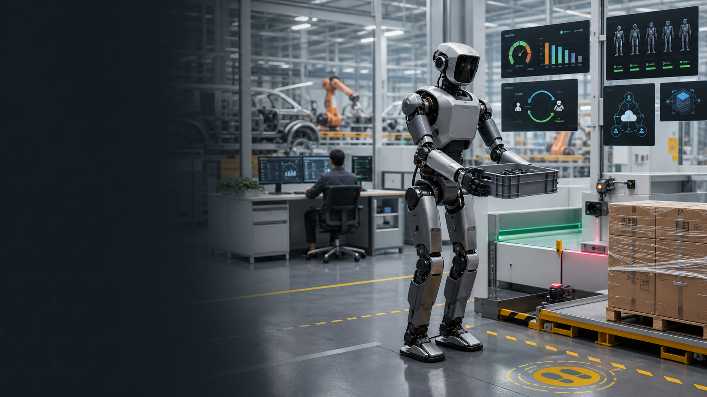

Market Reality
当前证据支持 paid pilot、narrow deployment 和工厂/仓储早期场景，不支持泛化替人叙事。
Pitch 44 · Task-Bounded Humanoid Platform
面向真实工序的商用人形平台：用 Qualcomm edge + LeRobot 数据闭环，把人形机器人从演示带入工厂质检、料箱搬运、巡检接待等可验证任务。
00 · Five-Thread Research
Figure/BMW、Agility/GXO、Apptronik、Boston Dynamics、Unitree、UBTECH、AgiBot 和中国政策共同指向一个窗口：人形机器人正在进入付费试点和窄场景部署。骁工选择把商业化第一步定义为任务包、能力账本和人机协助闭环。
当前证据支持 paid pilot、narrow deployment 和工厂/仓储早期场景，不支持泛化替人叙事。
汽车零部件加载、tote handling、产线物流和 sequencing 是最容易被 KPI 验收的入口。
政策、地方场景、数据训练中心和本体厂商加速，但客户需要本地云、交付和合规路径。
同步传感器、确定性控制、功耗热、安全证据、OTA 和售后才是从视频到产品的门槛。
每个任务都记录成功率、周期、接管率、适用环境、禁用条件和模型/数据版本。

01 · Humanoid WorkOS
骁工把人形机器人拆成可采购、可验收、可升级的任务工作单元。客户购买的不是“一个像人的机器”，而是 30 天现场建模、90 天试点、任务 KPI、远程协助、训练回流和分阶段扩队。
建模工位、货架、托盘、门禁、电梯、人员动线、安全区和禁区。
定义任务 manifest：输入、输出、传感器、工具、前置条件、失败处理。
Qualcomm edge 本地执行感知、策略推理、安全状态机和低延迟控制。
低置信度时减速、保持、请求人工协助，并记录接管全过程。
用能力账本决定是否扩到更多工位、班次、任务包和机器人队列。
02 · Human-Assist Data Flywheel
每一次低置信度、暂停、接管和恢复都会变成带上下文的 LeRobot episode。云端训练和评估输出签名 artifact，再通过灰度发布回到 Qualcomm edge runtime。
03 · First Task Packs
骁工避开“家庭万能助理”这种不可控承诺，先做企业能定义 KPI 的任务。每个任务包都带场地限制、成功指标、接管策略、数据授权和扩展路径。
料箱搬运、工位递送、物料 sequencing、空箱回收。
读取标签、拍摄异常、检查缺件、生成工单。
tote handoff、轻载搬运、传送带上下料协作。
园区引导、访客验证、夜间巡检和异常上报。
把工具、样品、耗材递送到人工工位或 review zone。
为客户私有场景采集多模态 episode 和失败恢复样本。
04 · China / Overseas Versions
中国版强调政策、制造业场景、本地云、中文工单、企业系统集成和本地服务；海外版强调 RaaS、仓储/制造劳动力缺口、保险融资、fleet uptime 和可审计部署。
汽车/3C 工厂、物流分拣、药房零售、园区接待、教育科研和数据训练中心。默认支持私有化、本地云、中文工单、企业微信/钉钉/飞书、WMS/MES/ERP 和数据合规边界。
围绕 paid pilot、per-shift RaaS、task ROI、warehouse safety、SLA、service ledger、insurance evidence 和 customer expansion。对接 Agility/Figure/Apptronik 证明的制造与物流商业叙事。
05 · Competition Demo
比赛主 demo 可以用桌面机械臂或移动底盘模拟骁工任务包：识别料箱、抓取/递送、异常标记、低置信度接管、episode 记录、云训练评估和 edge artifact 发布。评委看到的是任务闭环，而不是单个动作视频。
06 · Why Qualcomm
骁工把 Qualcomm 变成商用人形机器人最关键的边缘底座：多传感器本地融合、低延迟策略推理、确定性控制、安全身份、连接、OTA、模型 profile 和生命周期管理。
相机、深度、IMU、力/触觉、LiDAR/ToF 和安全传感器同步。
QNN / AI Hub / ExecuTorch 路线支持本地视觉、VLA/策略和低置信度判断。
ROS 2、实时 I/O、CAN-FD/EtherCAT、whole-body control 和安全降级。
5G / Wi-Fi / private network 支持远程协助、fleet telemetry 和云训练回路。
模型版本、数据来源、运行日志、接管证据和安全案例进入审计包。
骁工的商业主张不是“人形机器人已经万能”，而是“人形机器人必须先变成可采购、可验收、可接管、可训练、可审计的工序平台”。这正是 Qualcomm 边缘 AI、LeRobot 数据闭环和云训练产品化可以共同定义的新市场。